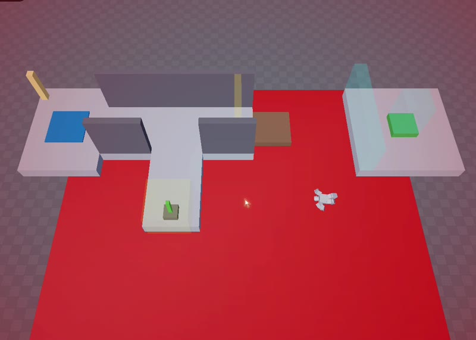
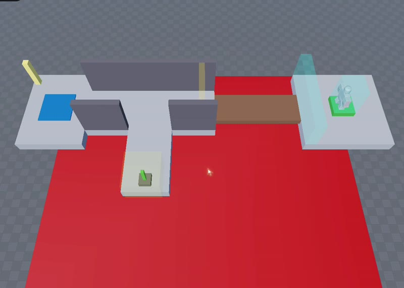

Agents and tool use
Agents that call tools, act in real software and recover from failure, built on the Claude API, the Agent SDK and MCP.
AI engineer in Karachi, open to remote work or relocation
Agents that use tools, evaluations that catch them when they fail, and guardrails against prompt injection. My projects cover game worlds, payments and multilingual safety, and every result comes with its raw logs. Before this I spent five years shipping Roblox and VR games.
Four kinds of AI work, each backed by a project you can open and check.
Agents that call tools, act in real software and recover from failure, built on the Claude API, the Agent SDK and MCP.
Pass bars written before the runs, baselines to beat, sample sizes stated, and every raw log published.
Guardrails that stop prompt injection before an agent sends, pays or signs, tested on attacks they never saw.
Proof: Agent firewall, Urdu injection study
Fine-tuned multilingual detectors (XLM-R and mDistilBERT) trained on my own machine and compared with hosted LLMs and classifiers.
Proof: multilingual detector
Most game-testing agents try to get better at the level. I flipped it: the player stays the same, and an AI has to fix the world.
A frozen scripted player tries a Roblox room built from JSON. Every event is logged.
Claude reads the failure and the room, and proposes a small JSON patch to the world.
A validator rejects cheats: moving the goal, shrinking the gap, changing physics.
The room is rebuilt from scratch and the same player tries again, three times.
Real Roblox Studio footage of the first test room: the short bridge, the fall, the one-field fix, and the same player reaching the goal.
The player is a script that only walks, not an AI. The video is a replay filmed for the camera; the results come from the logged runs.
Every result links to the file it came from, so you can check it.


An AI that repairs broken Roblox rooms so the same player can finish them. Every fix goes through a validator that blocks cheats, like moving the goal.
Haiku, Sonnet and Opus each repaired the first test room in 3 of 3 runs; random valid patches in 0 of 3. Three harder rooms are being tested now.
Successful injections on attack styles it never saw (n = 5,000)
A check between an AI agent and its tools. Before the agent sends, pays or signs anything, it asks whether the user actually asked for that.
Successful injections went from 23.3% to 0.2% (8 of 5,000).
Share of the same attacks Prompt Guard 2 caught
Do prompt-injection defences still work when the attack is written in Urdu or Roman Urdu? I tested open-source classifiers, five LLMs and MCP scanners, then fine-tuned my own detector.
Prompt Guard 2 caught 48.5% of English attacks but only 11.5% in Roman Urdu.
Live games taught me to ship, measure and fix things people actually play.
Agents, evaluation, AI safety, or AI for games. I’m based in Karachi and happy to work remotely or relocate. The fastest way to reach me is email.